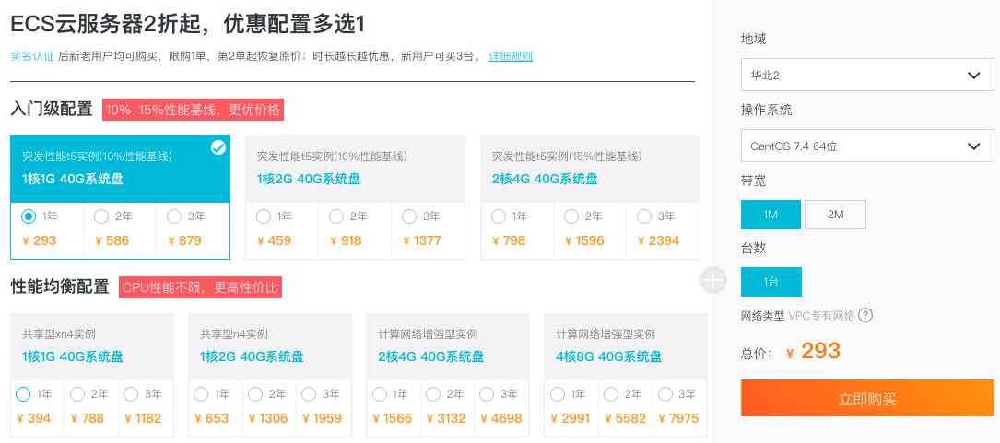
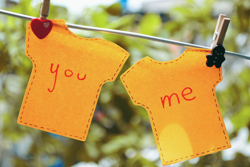

如何建立个人博客？
想必很多人都想建立一个，属于自己的个人博客，把自己的一些学习的经验和经历，通过互联网的形式来分享给别人。通过分享与网友进行互动，让更多的人了解和认识你，并且树立自己在互联网上的个人品牌，其实这就是一种“自媒体”。那么我们怎么去建立自己的自媒体博客呢？我认为：首先得先明白建立一个博客的流程是什么？只有先了解这套流程，我们才能做出自己满意的个人博客。
一、对网站域名和空间的选择
域名：一般会选择比较正规点的域名商购买，比如：万网、西部数码...（一年也才几十块钱）。考虑到我们的域名是要续费的，如果说你买的域是那种不正规的域名商，哪天域名商倒闭了，那么我的域名就不能使用了。还有一点值得注意的是:域名的选择最好“见名知意”越短越好。一般会用自己的名字来命名.
空间：分为国内空间和国外空间。
1、国内空间：需要备案网站才能上线，但是速度比国外空间要快一点，并且也稳定。
2、国外空间：指（除大陆外的空间）则不需要备案，可以直接使用。
一般我们对空间的选择有两点：第一、稳定性，第二、性价比。在这里我推荐大家可以去阿里云上去买服务器（因为现在对于新用户优惠大，价格便宜，服务稳定），想当年买个一年的服务器最便宜也要将近600块，现在都可以买二年了。
备注： 一个服务器可以放多个网站，至于数量多少在于你选的服务器配置有关系。（比如：cpu、内存...）
点击查看购买阿里云服务器 //https://promotion.aliyun.com/ntms/act/qwbk.html?userCode=0ksixkba
购买完服务器后，用ssh工具（window系统的可以下载一个putty软件，mac就直接用命令行直接连接就好了）连接到服务器，然后装一个WDCP的网站管理软件。就可以可视化管理自己建的网站啦！ 当然有些同学可能是新手，觉得服务器自己不会弄，或者麻烦的话，你也可以选择万网或者其它空间服务商去买个空间主机哈，在这里我就不推荐啦！（个人建议还是买个服务器的好）
二、选择网站后台系统
我们不需要会PHP、JSP、ASP、.NET之类的动态语言来编写网站后台，同样也可以做出一个动态网站来。因为现在有很多开源免费的CMS系统（内容管理系统）可以简单点理解成：一个可以为网站提供发布文章、图片等等一些功能的工具。
那么常见的个人博客系统有哪些呢？博客后台系统的选择，取决你空间服务器是PHP的还是ASP的。
空间服务器是PHP：那么我推荐你使用WordPress系统，因为WordPress最容易上手的网站程序了，程序安装5分钟搞定，就算是新手，也可以在半小时内学会搭建WordPress博客。后台傻瓜式管理，主题，插件，都可以在可视化后台按键完成，就算你不懂任何一句代码，也能轻松安装使用。
空间服务器是ASP：那么我推荐你使用Z-Blog系统，程序小，运行速度快。据说著名草根站长“卢松松”的博客，也是用的这个系统。现在PHP版本也出来了，具体选择看自己爱好。
当然并不只有这两款博客后台系统才可以做网站后台，也可以用其它的CMS系统比如：帝国cms、织梦cms..，甚至有能力可以自己开发网站后台（本博客就是采用nodejs自己开发的）。只是wordpress和Z-blog这两款博客系统是非常有利于做博客，因为他们本身就是为博客而量身定做的。
三、策划和设计网站效果图
很多人可能会说：既然那些博客系统，都有现成的主题，那还需要自己亲自DIY设计博客的效果图吗？那是因为网上的主题鱼龙混杂的，毕竟每个人的审美观不一样，需求也不一样！所以说：想做一个自己喜欢风格的网站，还是需要自己亲自动手.
四、制作前台页面
根据前面自己设计的效果图，然后把它制作成html的静态页面模板。方便和后台的结合，实现真正意义的动态网站。
五、制作动态网站
可能有些新手就会问了，网站还分静态网站和动态网站呀?为什么要实现动态网站呢？因为动态网站可以实现静态网站实现不了的功能，比如说：对网站文章的发布、图片的更新、留言等功能。
可能有同学会疑惑，我写好网页静态页面，但是我还是不清楚这个网站怎么做呀！别急，你所写好的前端html网页，只是后端语言中的模板（用来渲染数据的页面）。
六、测试以及上线
在本地搭建服务器，网站上线前先测试网站有没有什么BUG。如没有什么问题，可以将本地网站解压打包，使用FTP工具上传到服务器空间。
值得注意的是：先得把网站的数据库导入出来，然后在空间服务器还原。不然就会出错误哟！
如果没有本地服务器测试的朋友，我这里提供了一款本地服务测试工具。请点击下载（放心使用，安全无毒！）
写在最后：建立一个个人博客，其实跟建立网站流程是一样的。只有你真正的了解这套开发流程，才知道网站是怎样做出来的。
如果你还在结纠，自己如何独立开发一个网站或者博客。那么你可以从代码部分开始学些：点击学习
以上素材选自段浪博客
本文出处：http://www.duanliang920.com/learn232.html